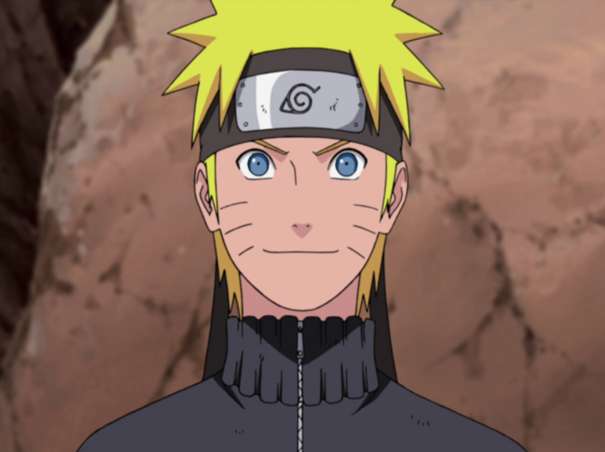
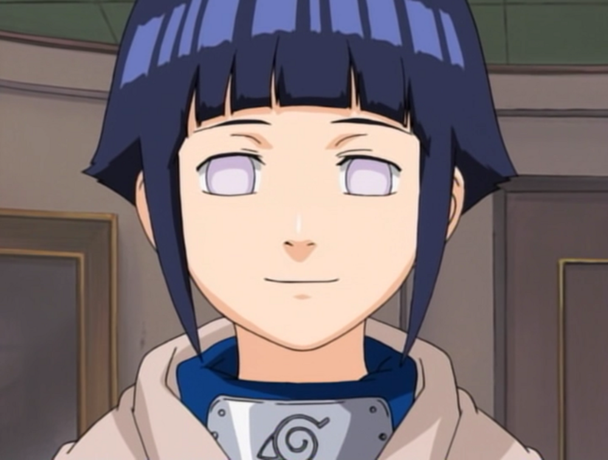
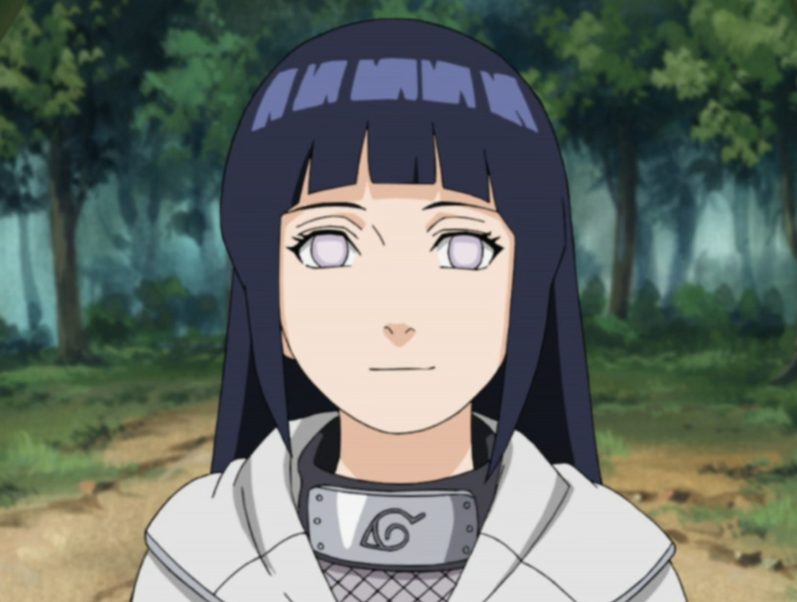

Naruto Uzumaki
Naruto Uzumaki (うずまきナルト, Uzumaki Naruto) is a shinobi of Konohagakure's Uzumaki clan.
He became the jinchūriki of the Nine-Tails on the day of his birth — a fate that caused him to be shunned
by most of Konoha throughout his childhood. After joining Team Kakashi, Naruto worked hard to gain
the village's acknowledgement all the while chasing his dream to become Hokage.
In the following years, through many hardships and ordeals, he became a capable ninja,
regarded as a hero both by the villagers, and soon after, the rest of the world,
becoming known as the Hero of the Hidden Leaf
(木ノ葉隠れの英雄, Konohagakure no Eiyū, literally meaning: Hero of the Hidden Tree Leaves).
He soon proved to be one of the main factors in winning the Fourth Shinobi World War,
leading him to achieve his dream and become the village's Seventh Hokage
(七代目火影, Nanadaime Hokage, literally meaning: Seventh Fire Shadow).

Hinata Hyuga
Hinata Uzumaki (うずまきヒナタ, Uzumaki Hinata, née Hyūga (日向)) is a kunoichi of Konohagakure.
Formerly the heiress of the Hyūga clan, she lost the position upon being deemed unsuited for the
responsibilities of leading the clan. Nonetheless, Hinata persevered and from her observation of
Naruto Uzumaki especially, Hinata found an example to follow.
Through her membership with Team 8, she sought to become strong enough to change herself, if even a little at a time.
A few years after the Fourth Shinobi World War, Hinata joined the Uzumaki clan after marrying Naruto.

